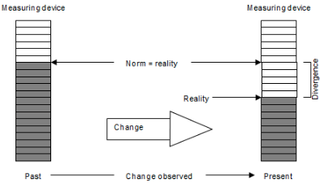
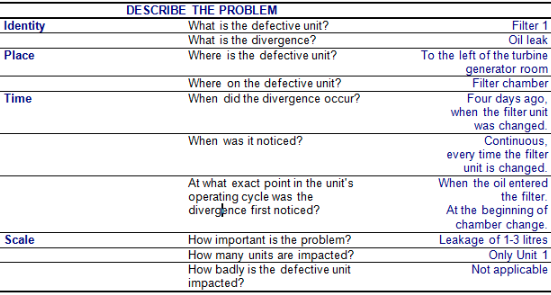
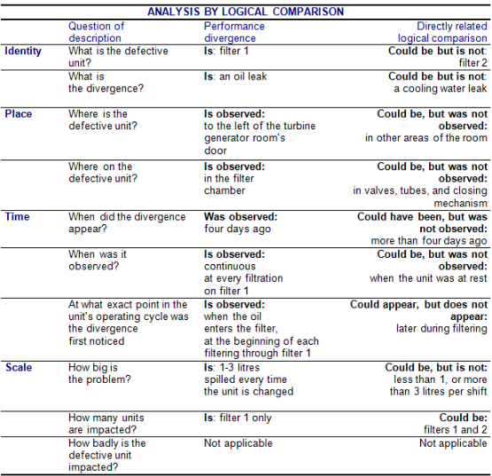
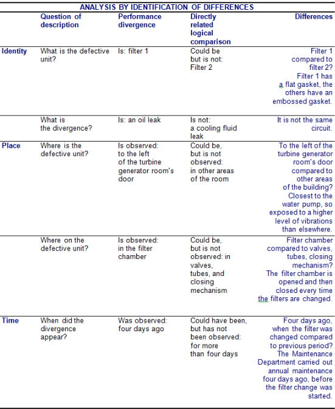
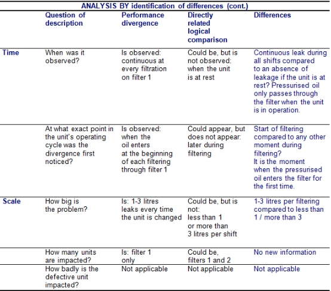
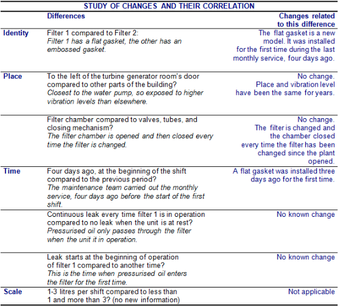
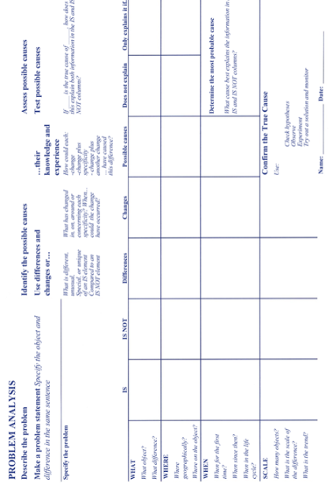
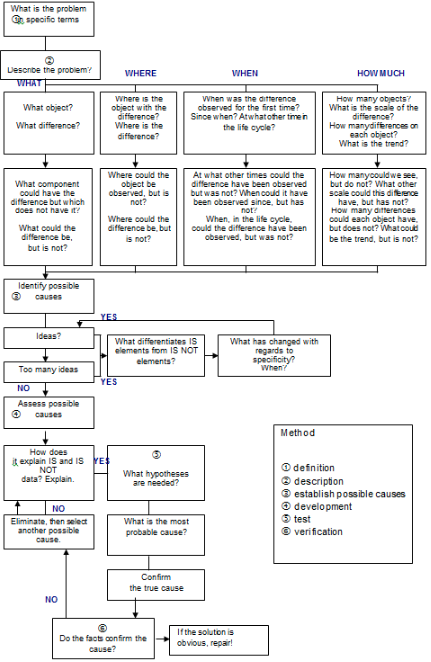

Au cours des modules précédents, vous avez eu l’occasion de vous familiariser avec les différents équipements et systèmes que l’on rencontre dans une usine d’incinération d’ordures ménagères, vous avez appris certaines règles de base régissant l’interaction de ces systèmes et certains points importants qu’il faut surveiller.
Le procédé d’une UIOM est souvent le siège de nombreux problèmes techniques. Certains persistent plusieurs années avant d’être résolus et génèrent ainsi des dépenses d’entretien inutiles. L’essentiel de notre métier, c’est-à-dire le facteur clé de la rentabilité de nos activités, consiste à régler ces problèmes aussi rapidement que possible, et surtout en prenant soin de s’assurer que la cause du problème a été éliminée, et pas seulement ses conséquences. C’est pour cette raison qu’il faut assurer non seulement un retour d’expérience entre les différentes usines, mais aussi favoriser l’usage d’une méthode efficace de diagnostic et de résolution de problèmes.
Il ne faut surtout pas croire qu’il faut être technicien ou ingénieur pour diagnostiquer ou résoudre un problème. La connaissance générale du procédé, de son histoire et l’observation attentive des événements font que chaque membre du personnel de l’usine est à même de jouer un rôle important dans l’optimisation des procédés.
Ce module vous présente certains exemples et vous explique le principe de base d’une méthode reconnue, la méthode Kepner-Tregoe ®, dont nous recommandons la formation pour les personnes intéressées.
Le magazine Power, publié aux États-Unis par McGrawHill, est un magazine technique destiné au secteur des centrales thermiques produisant de l’électricité. Périodiquement, les articles techniques sont accompagnés d’un récit humoristique basé sur un fait réel et vulgarisant une histoire de cas liée à la résolution de problèmes techniques typiques aux installations de production d’énergie.
Vous trouverez ci-après un exemple traduit et adapté de l’un de ces articles qui démontre bien l’importance de résoudre rapidement et correctement les problèmes de maintenance.
Dès qu’il obtint une copie du rapport, François se dirigea rapidement vers le bureau du directeur de l’usine tout en s’inquiétant de son sort. Devant la porte en chêne massif, il hésita à entrer pour communiquer la nouvelle, car pour la troisième fois il venait annoncer un important bris des tubes de surchauffeur, surchauffeur dont il avait lui-même recommandé l’installation, au coût de 12 MF, pour cette usine d’une capacité de 300 MW.
Son patron, un fortiche du gratte-papier, dont la mauvaise humeur légendaire était plutôt contagieuse,
blue{« À ta place, François, je commencerais à m’inquiéter, lui avait dit l’intraitable directeur d’usine, notamment compte tenu du fait qu’il n’y avait pratiquement aucune fuite avant ton soi-disant projet d’amélioration par un investissement de capital. » }
En fait, cette dépense en capital semblait vouloir se transformer en peine capitale…
l y avait plus de deux ans que François s’était fait le promoteur de cette modification dont le remboursement devait s’effectuer sur une période de vingt-deux mois avec les ventes du surplus d’énergie produite. Au lieu de servir de tremplin pour sa carrière, ce projet semblait le diriger tout droit vers la porte de sortie après vingt-deux ans de bons et loyaux services dans l’entreprise. Eh oui ! il fut un temps où l’on respectait l’ancienneté, mais aujourd’hui il suffit d’une erreur importante pour vous retrouver à la rue.
Conscient que le processus devait suivre son cours, François poussa la porte et montra le rapport au directeur d’usine Georges Le Bourru. Son patron laissa échapper une longue suite de jurons, qui aurait été tout à fait appropriée dans n’importe quelle salle de machines d’un bateau de la marine marchande.
blue{« Dis-moi seulement ce que tu vas faire cette fois, et surtout épargne-moi ton jargon technique », lui intima le directeur.}
François expliqua qu’il avait déjà contacté Surfaceblow \& Associates, une société d’ingénierie de New York spécialisée dans le diagnostic et l’analyse de problèmes pour les centrales thermiques. Un de leurs ingénieurs était déjà en route.
blue{« Fantastique !, répondit Georges C’est de cette façon que tu vas dépenser encore plus mon argent, et avec un expert qui vient d’une autre ville ! »}
Bien avant que François puisse répondre, une voix calme répondit pour lui par l’entrebâillement de la porte :
blue{« Mais, je vous assure, M. Le Bourru, que c’est de l’argent bien investi. »} Les deux hommes se retournèrent pour apercevoir une jeune femme plutôt jolie, qui pénétra avec assurance pour se présenter. C’était Max Surfaceblow, ou Mlle Maxime pour ceux qu’elle aimait moins, petite fille du légendaire Marmaduke (alias Marmy), une autorité en diagnostics et résolutions de problèmes pour l’industrie thermique. François avala sa salive. Les diplômes impressionnants de Max et son ascendance familiale en faisaient un « as » de la résolution de problèmes.
Mais son patron vit quelque chose de très différent. En fait, il ne vit qu’une jeune femme au tempérament un peu frondeur, osant même porter dans son bureau une casquette des Yankees de New York au lieu d’un casque de sécurité. Le directeur, plutôt fâché, sortit en claquant la porte et en criant :
blue{« C’est avec ça que tu vas nous sortir du pétrin ? C’est avec ça que tu vas exploser le budget ?! » }
Max roulait de grands yeux. « Nous y voilà, pensait-elle. Combien de fois vais-je devoir prouver qui je suis à un directeur myope. Il faudrait peut-être que je me laisse pousser la moustache et que je commence à fumer le cigare… »
François s’excusa auprès d’elle pour le caractère soupe au lait de son patron – ce n’était pas la première fois qu’il devait le faire – et profita de la tranquillité qui suivit son départ pour remercier Max de s’être dépêchée. Il lui servit un café et lui expliqua la situation.
blue{« Cette chaudière au charbon a fonctionné pendant trente ans comme une vraie bête de somme et elle n’a présenté aucun incident, expliqua-t-il avec une fierté évidente. J’étais certain qu’elle pouvait encore tourner pendant dix ans si nous la traitions convenablement. Je me suis donc battu, il y a deux ans, pour faire remplacer complètement le surchauffeur et ainsi améliorer notre compétitivité. Nous avons dépensé un argent fou, nous avons installé de nouvelles surfaces d’échange avec les “épingles” nécessaires. Une des meilleures sociétés en sous-traitance mécanique a effectué les travaux sous notre surveillance.}
– blue{Jusque-là, tout me semble OK}, souffla Max.
– blue{D’accord, mais moins d’un an plus tard nous avons constaté des fuites dans deux tubes du nouveau surchauffeur secondaire, près du collecteur situé dans l’entretoit. Les nouveaux tubes partent et finissent dans ces collecteurs de cet entretoit. Comme mesure d’urgence, nous avons coupé et bouché ces deux tubes, puis les avons fait analyser par un laboratoire. Je pensais simplement qu’il s’agissait d’un ou deux tubes dont le matériau était défectueux, ou toute autre cause isolée de ce genre. Mais les résultats de l’analyse conclurent à un problème de fatigue, ce qui m’a complètement “disjoncté” parce que les problèmes de fatigue se produisent à long terme. Il faut un certain nombre de cycles, vous savez, pour que l’on soit confronté à des problèmes de fatigue. Et donc, si nous faisions réellement face à un problème de fatigue, j’allais me retrouver bientôt avec plusieurs fuites isolées sur les bras.}
– blue{Et vous aviez vu juste ?}
– blue{Malheureusement, c’est ce qui s’est produit. Nous avons encore tourné pendant quelques mois, puis nous avons été forcés de nous arrêter à nouveau à cause d’une fuite dans un tube différent, mais au même endroit, près du collecteur. La fuite était localisée dans la partie la plus coudée du tube, pour qu’il puisse être soudé à la partie supérieure du collecteur. En fait, toutes les fuites se situaient près du raccordement au collecteur. Cette fois, nous nous sommes sérieusement penchés sur le problème et nous avons effectué des essais au liquide pénétrant sur tous les tubes coudés raccordés au collecteur. À ma consternation, nous avons trouvé des fissures de même nature sur six autres tubes répartis au hasard le long du tube collecteur.}
Les fissures se produisaient au même endroit, sur les tubes raccordés au même tuyau collecteur.
– blue{Quand avez-vous dit que cela s’était produit ?}, interrogea Max.
– blue{Il y a six mois. Et voilà où nous en sommes : en panne avec des fuites supplémentaires. Ce qui est réellement effrayant, c’est que cette fois les fuites se sont produites sur certains des tubes neufs qui avaient déjà été réparés. Ils ont moins d’un an et ils fuient à nouveau !}
– blue{Avez-vous vérifié que le matériau est bon ?}
– blue{oui, l’analyse du métal a montré qu’il y a bien 2,25\
Max écoutait les détails et elle était concentrée sur le fond de l’histoire, tout en ayant dans la tête la voix retentissante de son grand-père. Comme lui, elle savait blue{retenir les hypothèses essentielles et validées} pour mieux percer le brouillard que d’autres n’arrivaient pas à percer.
La fatigue est habituellement un phénomène qui se produit après de longs cycles, raisonna-t-elle, mais cette usine a connu un problème de fatigue après un cycle court. Un effort important doit donc être imposé sur les tubes. Et cet effort a commencé lorsqu’une partie du surchauffeur a été remplacée, puisqu’ils n’avaient jamais connu ce type de problème auparavant. « Trouve ce nouveau type d’effort et tu trouveras le problème », semblait résonner la voix de Marmy dans sa tête.
blue{« OK, François, emmenez-moi à une porte d’accès et prêtez-moi un casque de chantier. J’aimerais circuler dans cette chaudière et constater sur place ce que qu’il y a à voir. »}
François lui proposa de l’accompagner mais elle déclina poliment : blue{« On ne met jamais deux chats dans la même cage »}, lui dit-elle avec un sourire.
Parée sur le plan sécurité, Max alla tout d’abord voir l’entretoit pour examiner les tubes en réparation. Elle prit un des tubes déjà coupé et constata qu’il présentait les fissures caractéristiques sur le coude extérieur dues aux problèmes de fatigue, les fissures étant orientées transversalement par rapport à l’axe du tube.
blue{« C’est vrai qu’il y a un problème de fatigue, se dit-elle, et il n’y a pas de raison expliquant la localisation des tubes défectueux. »}
Elle examina les quatre supports, équidistants les uns par rapport aux autres le long du collecteur. Ce n’était pas parce qu’elle doutait des affirmations de François, mais Marmy lui avait martelé dans la tête une devise :
blue{« Ne crois jamais ce que tu entends, et seulement la moitié de ce que tu vois ! »} Elle examina ensuite le sol et ne trouva rien d’anormal sur les nouveaux réfractaires qui avaient été installés dans l’entretoit, une fois les tubes de surchauffeur soudés au tube principal. blue{« Je parie que ce nouvel effort doit venir de l’intérieur de la chaudière »}, se dit-elle. Elle quitta donc l’entretoit et grimpa sur l’échafaudage devant le surchauffeur secondaire. De là, elle vérifia que tous les clips d’alignement étaient correctement en place.
Les tubes pouvaient être mobiles les uns par rapport aux autres, la partie basse des épingles ne touchait à rien, les tubes étaient correctement alignés, donc ils n’étaient pas appuyés sur eux-mêmes ; il n’y avait pas de trace de déformation de tube causée par des températures excessives, les cendres volantes semblaient circuler de manière uniforme sur toute la largeur du surchauffeur ; il n’y avait pas non plus de systèmes de support que les équipes de maintenance installent parfois pour maintenir les tubes alignés, mais qui souvent occasionnent des contraintes inhabituelles. Max constata également que les soudures semblaient en bon état et que le sous-traitant avait correctement réalisé la courbure des tubes.
Une phrase lui revenait constamment en tête : « Personne n’arrivait à voir d’où provenait le problème… » Elle répéta plusieurs fois cette phrase comme si elle entendait un slogan, puis : « Ça y est ! se dit-elle. C’est que personne n’est capable de voir ! »
De retour dans l’entretoit avec François, elle empoigna un marteau et commença violemment à faire voler en éclats le sol réfractaire. François voyait le coût des réparations augmenter et voulut stopper la manœuvre, mais Max avait le doigté de l’artisan avec les machines, et la manière assurée dont elle brandissait le marteau avait hypnotisé le chef de maintenance. Juste après avoir enlevé le réfractaire, mis à nu quelques tubes du toit, Max trouva ce qu’elle cherchait :
« blue{Regarde un peu ces clips de cornière !, s’écria-t-elle alors qu’elle lançait de côté le marteau.}
– blue{Oui, que font-ils ici ? }
– blue{Ce qu’ils font ici, c’est ça la cause de vos problèmes ! Le sous-traitant qui vous a remplacé le surchauffeur doit les avoir fixés par points de soudure aux nouveaux tubes du surchauffeur. Puis il a soudé ces clips aux tubes du toit de façon à maintenir en place le surchauffeur pour que ses tubes puissent être soudés au collecteur situé dans l’entretoit. Le problème est qu’il a oublié d’enlever les clips une fois que les soudures étaient faites.}
– blue{Oui… oui… oui… !}, cria François au moment où cet épisode lui revint clairement à l’esprit. Donc les tubes de surchauffeur ne pouvaient se dilater nulle part puisqu’ils étaient fixés entre le collecteur et le tube de chaudière. Ils étaient forcés de fléchir au niveau du coude près du tube principal.
– blue{OK bien compris !}, lui répliqua Max.
– blue{Mais je ne comprends pas : comment avez-vous su ? Ne me dites pas que, par un truc quelconque, vous avez pu voir ces clips à travers le réfractaire… » } Max sourit et répondit modestement :
blue{« Eh bien, cela aide d’avoir vu comment on remplace un surchauffeur plusieurs fois auparavant. »}
Elle se rappelait les voyages qu’elle faisait avec Marmy, pendant qu’elle préparait son diplôme universitaire.
blue{« Au cours d’autres missions, continua-t-elle, j’ai vu des entreprises utiliser ce genre de clips. Si vous imaginez qu’un chirurgien peut laisser des pinces dans le corps d’un patient par inadvertance, un sous-traitant peut très bien faire la même chose dans un générateur de vapeur. »}
Quelques minutes plus tard, François appela au téléphone une entreprise de réfractaires pour enlever tout le reste du sol et voir si d’autres clips avaient été laissés dessous. L’usine resterait encore en panne quelque temps en raison des modifications à réaliser, mais il voulait en finir avec ce problème une fois pour toutes.
blue{« Il y a encore une chose à faire, dit François à Max, au moment où elle troquait son casque de chantier contre sa casquette des Yankees et qu’elle se préparait à rentrer tout droit chez elle. Je vais demander à notre sous-traitant de payer ces réparations, ainsi que les arrêts forcés. Cela va donner une bouffée d’oxygène à notre budget. »}
Nous allons maintenant étudier la méthode de résolution de problèmes à l'aide d'un exemple concret.
Où sommes-nous ?Dans une UIOM avec production d’énergie électrique. Le turbo-alternateur est muni d’un système de lubrification utilisant deux filtres à huile qui fonctionnent en alternance.
ProblèmeLe jour de l’apparition du problème, un contremaître se précipite dans le bureau de son supérieur. Il pensait qu’une fuite provenait des valves que des vibrations auraient desserrées, comme cela s’était déjà produit. Un mécanicien essaya de trouver l’emplacement exact de la fuite, mais en vain car la machine avait déjà été nettoyée. Les joints paraissaient correctement serrés. Après avoir examiné les tuyaux, les valves et les parois du compartiment de filtration, le mécanicien en conclut que la fuite avait une autre origine.
Le lendemain la fuite s’accentua. Un autre mécanicien détermina que la fuite provenait du compartiment de filtration, mais le mystère subsistait. Pourquoi le système de filtration en parfait état fuyait-il ? Par mesure de sécurité, il remplaça le joint d’étanchéité, qui pourtant paraissait neuf. Mais le filtre 1 continua de fuir. Quelqu’un hasarda que le personnel de maintenance ne l’installait peut-être pas avec assez de soin. On avait justement engagé le mois dernier deux nouveaux employés qui, peut-être, ne se servaient pas de la clef dynamométrique indispensable. Mais cette hypothèse ne se vérifia pas non plus.
Le même jour, un ouvrier se blessa en tombant sur le sol couvert d’huile et le personnel d’entretien commença à se plaindre. Deux jours plus tard, le directeur de l’usine, mis au courant, commanda à l’ingénieur d’exploitation et au contremaître de régler ce problème dans la journée.
L’après-midi, quelqu’un s’aperçut que le filtre 1 était le seul à posséder un joint d’étanchéité plat et mou alors que l’autre possédait une forme de relief imprimé dans le joint. On découvrit alors que ce joint plat avait été installé la veille de la première apparition de la fuite. Il provenait d’un lot acheté récemment à un nouveau fournisseur qui les vendait 10\
On compara les deux types de joints et il fut évident que le nouveau était moins épais et plat, et qu’il n’était nullement adapté au système de filtration sur lequel il était monté. Il fuirait toujours et n’aurait jamais dû être installé. De nouveaux joints furent achetés à l’ancien fournisseur, puis mis en place. La fuite cessa.
Après coup, certains reconnurent qu’ils avaient pensé à cette solution, mais sans pouvoir vraiment expliquer le lien entre la cause et l’effet. Les solutions prônées se fondaient sur des expériences passées similaires, sur des raisonnements classiques ou sur de vagues soupçons. Le remplacement du joint avait même été effectué par simple mesure de sécurité. Ce fut donc par hasard que la solution fut trouvée.
En effet, il est parfois possible de rétablir un fonctionnement apparemment normal sans que la cause du problème ait été clairement déterminée, mais si ce dernier persiste il faudra réétudier toutes les solutions envisagées pour aboutir à une certitude.
Dans ces cas, on peut dire qu’on a éliminé la conséquence sans pour autant avoir supprimé la cause.
Si, au contraire, tous les efforts produits demeurent inefficaces, une solution temporaire devra être trouvée pour que l’usine puisse continuer à fonctionner jusqu’à l’identification de la cause véritable. Souvent, cette solution temporaire s’avère définitive, et malheureusement augmente le coût d’exploitation.
On obtient la performance escomptée attendue lorsque se trouvent réunies toutes les conditions nécessaires et que tout fonctionne normalement. Toute intervention peut avoir des effets aussi bien bénéfiques que néfastes. Lorsqu’un effet se traduit par une baisse de performance, plus cette baisse a de l’ampleur, plus elle doit être stoppée rapidement.
Si la performance correspondait à la norme et qu’elle ne l’atteint plus, c’est qu’un changement s’est produit. Mais nous sommes au début de l’analyse de problème et la nature du changement et son point de départ ne sont pas connus.
Remarque :
La méthode de résolution du problème doit permettre de réduire la différence (divergence) entre la réalité et la norme. Cette démarche peut s’apparenter à celle utilisée en régulation ; il faut que la mesure (la réalité) soit la plus proche de la consigne (la norme).
Dans certains cas la norme n’a jamais été atteinte : nous appelons ceci divergence de démarrage (ainsi dans le cas d’un matériel qui, dès sa mise en service, n’a pas fonctionné de façon satisfaisante). La réalité (la performance) a alors toujours été au-dessous de la norme.

Fig. 1
Les questions suivantes doivent être posées pour trouver la divergence :
Ces techniques d'analyse de problème comportent six étapes successives clés : Étape 1. Définir le problème. Étape 2. Décrivez le problème en fonction de quatre critères : identité, lieu, temps et échelle. Étape 3. Établissez les causes possibles du problème et les différences. Étape 4. Développez les causes possibles. Étape 5. Testez la cause la plus probable. Étape 6. Vérifiez la vraie cause.
Le reste de ce chapitre est consacré à une présentation pas à pas de l'analyse du problème de fuite des filtres sur le turbogénérateur.
Étape 1. Définition du problèmeLa définition précise du problème est la première étape indispensable à tout traitement. Elle correspond à l’énoncé du problème. C’est à partir de cet énoncé de base que le travail de description, d’analyse et d’explication permettra d’aboutir à la solution du problème. Dans notre exemple, l’énoncé du problème est : « Une fuite d’huile du filtre numéro 1 ».
Cet énoncé paraît évident, mais s’il s’était limité à l’une des manifestations du problème, par exemple « Flaque d’huile sur le sol du local du turboalternateur », il aurait fallu remonter à la cause de cette manifestation, c’est-à-dire « Fuite d’huile du filtre numéro 1 », c’est-à-dire le vrai point de départ de l’analyse. Il faut toujours chercher à valider la pertinence du point de départ, sinon l’analyse n’aboutira pas sur une solution.
Nous devons donc toujours chercher à savoir si l’énoncé du problème, tel que nous l’avons formulé, correspond bien au point de départ de l’analyse, sinon il faudra remonter jusqu’au point où il n’est plus possible d’expliquer cette divergence. Il est indispensable de commencer l’analyse du problème avec le bon énoncé, qui doit être le plus proche possible de l’origine de la divergence entre la norme et la réalité.
Écrire un énoncé succinct au format objet/écart, en utilisant seulement un objet et un écart. Il faut éviter de se disperser sur plusieurs pistes.
Étape 2 : Spécification du problème à partir de ses quatre critères : identité, lieu, temps et ampleur.Cette deuxième étape consiste à décrire le problème de manière détaillée, c’est-à-dire découvrir quatre axes suivants :
Quel que soit le problème, toutes les informations recueillies iront dans l’une ou l’autre de ces catégories. Il faudra ensuite poser des questions spécifiques qui enrichiront chacune des catégories afin d’en retenir les éléments les plus pertinents.

Fig. 2
Cerner le problème par une base de comparaison logique
« Qu'est-ce que c'est ou pas ? » Voilà une bonne question :
Nous savons que le problème est "fuite d'huile dans le filtre 1". Pourquoi se demander si une machine fuit qui ne fuit pas ? Ou un endroit où la fuite pourrait être mais où elle n'est pas localisée ? De tels détails pourraient nous fournir un élément essentiel pour notre analyse : une base de comparaison.
En considérant des faits qui pourraient être mais qui ne le sont pas, nous pouvons nous concentrer sur les points les plus importants de notre problème : qu'est-ce que c'est, où et quand il est apparu, et à quel point il est important. Cela nous rapproche un peu plus de la solution. Bien entendu, il faut trouver des points de comparaison pour chacun des quatre critères de description. De plus, en réitérant notre énoncé de problème et en y ajoutant des informations, nous pouvons créer une troisième colonne intitulée « Comparaison logique directement liée ». Dans cette rubrique, le problème est présenté tel qu'il pourrait être mais ce qu'il n'est pas, selon les différents critères d'identité, de lieu, de temps et d'échelle.
Notez que la deuxième demande d'informations d'identité supplémentaires n'implique aucune comparaison logique immédiate. Une comparaison fuite d'huile/autre type de défaillance n'est pas pertinente. Il appartient à la personne qui effectue l'analyse de déterminer ce qu'est une comparaison logique directe.
L'existence d'une panne qui aurait pu se produire mais qui ne s'est pas produite est parfois très importante car elle réduit le nombre d'hypothèses.
Nous avons maintenant tous les éléments caractéristiques du problème : la troisième étape consiste à identifier ceux qui sont les plus importants.

Fig. 3
Étape 3. Établir les causes possibles du problème et les différencesDifférences souvent faciliter la résolution du problème.
Prenons l'exemple de deux plantes en pot identiques dans un bureau. L'un grandit, mais pas l'autre. Si nous montrons la plante en difficulté à un observateur, il suggérera de nombreuses raisons possibles pour son mauvais état. Cependant, si cet observateur constate que bien qu'au même endroit, les deux plantes n'ont pas été traitées exactement de la même manière (par exemple moins de lumière), leurs conclusions seront plus rapides et plus précises que sans cette comparaison. Quelle que soit la nature du problème, une comparaison significative garantit une bonne analyse.
Quelles sont les différences entre le filtre 1, qui fuit, et l'autre filtre, qui ne fuit pas ? Quelles informations pouvons-nous connaître ?
Si nous appliquons cette question aux quatre éléments du problème, de petits indices sur la cause du problème apparaissent progressivement. Ce ne sont que des indices, et non des réponses ou des explications.
Les différences caractérisant le problème doivent également être identifiées, par exemple son identité, sa localisation dans l'espace et le temps, et son échelle par rapport à ce qui aurait pu le caractériser. Une autre colonne peut donc être ajoutée à notre tableau intitulé "Différences".
Pour révéler les différences, la question suivante doit être posée : « Quelle est la différence entre le « est » et le « n'est pas » ? ». Des différences de qualité et de quantité variables seront également obtenues.
Concernant l'échelle, la réponse à la question « Dans quelle mesure chaque unité est-elle impactée ? » est « sans objet (NA) ». En effet, certaines informations complémentaires n'auront aucun intérêt ; cependant, il est néanmoins nécessaire de tout formuler et d'essayer pour y répondre, par souci d'objectivité.
Tous les problèmes peuvent être décrits en utilisant le mécanisme de requête supplémentaireUne fois le problème décrit selon ses quatre composantes (identité, lieu, temps, échelle), nous avons la moitié des informations nécessaires. Cependant, c'est la seconde moitié qui transformera la description en un outil d'analyse efficace.

Fig. 4
{figure}figure[H]

Fig. 5
Etude des changements constatés et de leur corrélationDans le schéma sur page 11, « structure du problème », la pointe de la flèche indique le moment où les performances changent par rapport aux performances passées conforme nt avec la norme et les performances inacceptables actuelles qui constituent la réalité.
Quiconque ne connaît pas l'analyse des problèmes sait que la baisse de performance résulte d'un changement qui doit être identifié. Cependant, parfois, plusieurs changements, planifiés ou non, se produisent en même temps. Par conséquent, les recherches doivent être limitées à la zone dans laquelle le changement, qui a causé le problème, est susceptible d'être dans: c'est-à-dire en relation avec les différences entre les données et celles qui ne sont pas. Cette approche de limitation est la prochaine étape de notre analyse.
Nous devons trouver les changements les plus susceptibles d'être la cause de notre problème. Ces changements seront ceux qui révéleront les différences observées et fourniront des informations dans les quatre catégories suivantes : identité, emplacement, temps et échelle. En notant toutes les différences, est-il facile de voir que seules quelques-unes sont pertinentes pour l'analyse. Ceux qui pourraient expliquer un changement et ses conséquences ressortiront encore plus par rapport à d'autres qui ne sont pas pertinents.
Ainsi, les données correspondant à la notion de changement peuvent être ajoutées à notre tableau en parallèle de celles obtenues à partir de la relation est/n'est pas (voir tableau page précédente).

Fig. 6
Étape 4. Développement des causes possiblesIl est très probable que l'explication du problème se trouve dans les différences et les changements dans notre tableau. Cependant, il existe plusieurs causes possibles. Il faut donc créer des groupes de causes susceptibles d'expliquer les problèmes. En effet, deux changements se produisant en même temps, du fait de leur combinaison, peuvent entraîner une différence de performance que chaque changement seul n'aurait pas causé.
Pour identifier ces causes possibles, pour chaque élément d'information dans les colonnes « différences » et « changements », il faut prouver si chacune est susceptible de provoquer une divergence (différence) entre la norme et la réalité telle que décrite dans l'énoncé, et éventuellement des combinaisons d'eux.
Dans le cas de notre exemple de problème, nous identifions facilement la différence de combinaison plus le changement concernant deux éléments de données d'identité.
Cause possible : le joint plat (qui différencie le filtre 1 de l'autre filtre) d'un nouveau fournisseur (changement dû à cette différence) est trop fin et la surface n'est pas lisse. C'est ce qui a causé la fuite sur le filtre 1. D'autres causes possibles peuvent être étudiées mais ne peuvent être retenues car on connaît maintenant la véritable cause ; cependant, il est intéressant de les examiner avant de passer à l'étape suivante du processus d'analyse du problème : tester la cause la plus probable.
L'une de ces autres causes possibles est l'emplacement dans un espace : le filtre 1 est à proximité de la pompe à eau. Cette information n'est pas anodine, car cela signifie que notre filtre est exposé à des niveaux de vibrations beaucoup plus élevés que l'autre filtre. Mais cela ne constitue pas un changement comme cela a toujours été le cas. La description nous indique également que la fuite se situe dans la chambre et non dans les valves. Des fuites causées par des vibrations se sont déjà produites, mais sur les vannes.
Puisque nous devons identifier toutes les causes possibles et non sélectionner la vraie cause, les vibrations peuvent être retenues comme cause possible.
Cause possible : vibrations de la pompe à eau située près de la chambre du filtre 1 (différence d'emplacement) provoquant une fuite d'huile du filtre 1.
Étape 5. Tester la cause la plus probableAfin d'être objectif, toutes les causes possibles doivent être retenu. Le test de la cause la plus probable de cette étape mesure la probabilité de chaque cause possible en la comparant aux effets décrits dans la deuxième étape de l'analyse. C'est donc une tentative d'expliquer tous les faits observés au moyen de chacun d'eux, comme s'il en était la vraie cause. Car cette vraie cause doit être cohérente avec tous les aspects du problème, sans exception, puisqu'elle est à l'origine de l'effet constaté.
Autrement dit, chaque cause possible n'explique les différences et les changements que si telle ou telle autre hypothèse est vraie.
Le raisonnement suivant doit être utilisé :
Si les vibrations de la pompe à eau sont la vraie cause de la fuite, comment expliquent-elles :
Dans les cas précédents, les vibrations avaient impacté les valves et non la chambre, ce qui est logique. Pourquoi les vibrations provoqueraient-elles soudainement une fuite alors que cela ne s'était jamais produit auparavant ? Il est évident que cette explication n'est pas satisfaisante.
Les différences et changements identifiés dans l'analyse suggèrent une autre cause possible :
Cause possible : les nouveaux employés du service de maintenance (différence dans le temps) ne ferment pas correctement la chambre du filtre, car ils n'utilisent peut-être pas la bonne clé dynamométrique. C'est ce qui a causé la fuite sur le filtre 1.
En appliquant la même approche que ci-dessus sur cette cause possible, on ne peut pas expliquer pourquoi la fuite ne se produit que sur le filtre 1 et pas sur l'autre filtre. Cette seconde cause possible n'est pas plus satisfaisante que l'autre.
Cependant, la vraie cause explique tous les effets décrits : un nouveau joint plat plus fin installé sur le filtre 1 quatre jours plus tôt lors du dernier entretien. Il explique l'identité de la panne, sa localisation dans l'espace et dans le temps, et son ampleur. Tout est lié à la logique, et par comparaison, la probabilité d'autres causes possibles semble faible.
Tester une cause possible en appliquant les effets décrits est un exercice de logique. La cause la plus probable apparaît, la cause qui explique le mieux la divergence. Cependant, il n'y a pas de certitude absolue que la cause retenue soit la bonne.
Étape 6 : Vérifier la cause la plus probableVérifier une cause probable consiste à prouver qu'elle a produit l'effet observé. Dans notre exemple, il suffit d'obtenir un joint gaufré de l'ancien fournisseur, de l'installer et de voir si la fuite s'arrête ou non. On pourrait échanger les joints du filtre 1 et de l'autre filtre. Les deux méthodes prouveraient que la fuite est causée par l'installation d'un nouveau joint plat et flexible bon marché.
La vérification est facile une fois qu'une cause probable a été identifiée. Il s'agit d'une demande d'informations complémentaires ou d'une action expérimentale (comme le remplacement des joints). Il s'agit donc d'une démarche distincte destinée à prouver l'existence d'une relation de cause à effet.
Demandez : Parmi ces causes possibles, laquelle est la plus raisonnable ?
La cause la plus probable a :
La vérification n'est parfois pas possible pour des raisons de sécurité, et l'étape de test doit être suivie d'actions correctives basées sur la cause la plus probable. Heureusement, la vérification est possible la plupart du temps. Sa forme dépend de l'objet de l'analyse : un problème mécanique pourrait facilement entraîner une action expérimentale. Dans ce cas, la vérification est assimilée à une action corrective.
L'échec est toujours possible, surtout s'il n'y a pas beaucoup d'informations dans la description. Cependant, il y a deux causes principales d'échec même si une analyse de problème a été appliquée :
Ces techniques ont été appliquées d'innombrables fois à des problèmes qui semblent insolubles ou nécessitent d'énormes dépenses de temps et d'argent. Bien que l'analyse des problèmes soit très efficace pour la collecte et le traitement des informations, les réponses ne peuvent pas être précises à 100\
Si aucune des causes possibles ne passe le test ou la vérification ultérieure, il n'y a qu'une seule solution : répéter l'analyse mais avec plus de rigueur. Des informations plus détaillées seront nécessaires pour la description et pour mettre en évidence les différences obtenues à partir des données "est", ainsi que les changements générés par ces différences. Il est possible que de nouveaux indices apparaissent, suggérant de nouvelles causes possibles, parmi lesquelles la solution apparaîtra enfin.
Par conséquent, l'échec réside dans une mauvaise collecte d'informations ou dans une utilisation insuffisante de celles-ci.
L'analyse des problèmes est un processus logique qui ne considère que les conclusions étayées par des faits spécifiques. Il utilise les plus petites informations ainsi que systématiquement et objectivement notre expérience et notre jugement.
Le travail d'équipe est essentiel face à des différences si complexes qu'une seule personne est incapable de les comprendre. L'analyse des problèmes offre à tous les membres de l'équipe une manière identique de traiter l'information, limitant les problèmes de communication.
Par conséquent, la méthode doit être utilisée par autant de personnes que possible dans l'usine. Tous les employés, quelle que soit leur fonction, ont une perception spécifique qui peut toujours être utilisée pour fournir des informations apparemment sans importance, mais qui peut être cruciale pour trouver la solution rapidement.
Astuce
Utilisez les deux documents résumant le processus contenus dans l'annexe pour vous aider à préparer des réunions de résolution de problèmes entre toutes les personnes impliquées :

Fig. 7
ANNEXE 2 Organigramme résumant le processus de questionnement

Fig. 8